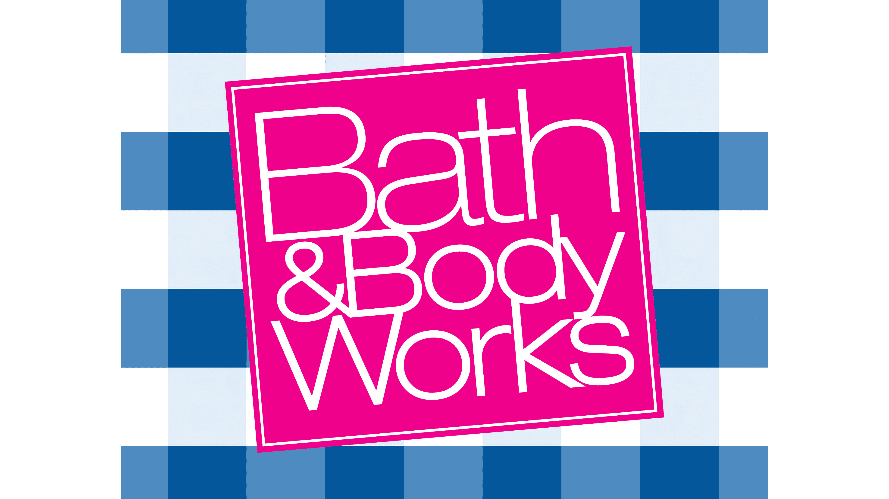
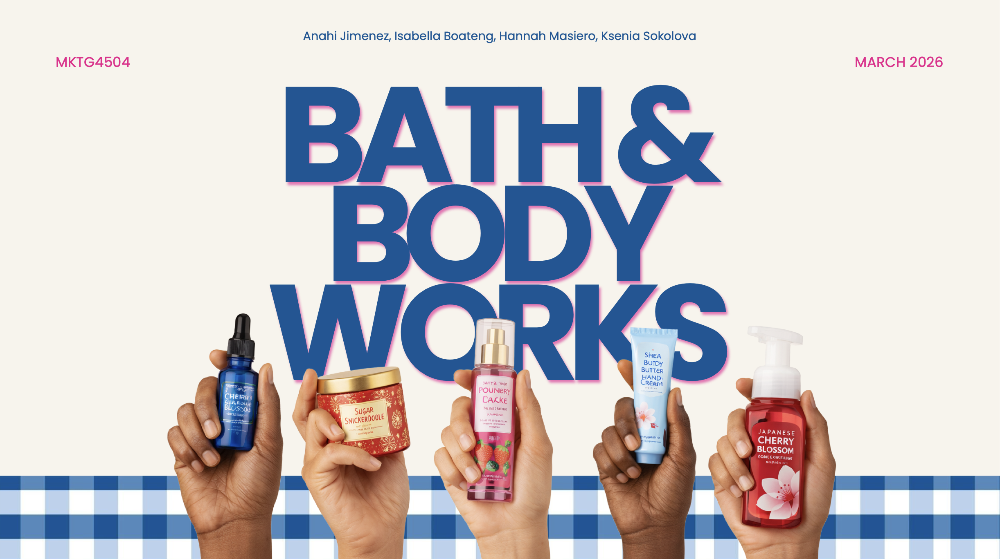

Advertising • Branding • Campaign Strategy
Project Rebrand
A group brand campaign project exploring how Bath & Body Works could reconnect with older consumers through nostalgia, elevated visuals, and a more mature brand extension.

Overview
A campaign concept rooted in nostalgia and growth.
This project focused on repositioning Bath & Body Works for consumers who grew up with the brand but now want a more refined, intentional, and mature experience. The campaign explored visual identity, product positioning, messaging, and brand extension strategy.
Goal
“Reintroduce the brand in a way that feels familiar, elevated, and grown.”

Reflection
What this project taught me.
This project helped me think more deeply about how brand strategy, consumer behavior, visual identity, and storytelling work together. It also strengthened my ability to collaborate on a campaign concept, organize research into a clear strategy, and present design decisions in a polished, persuasive way.